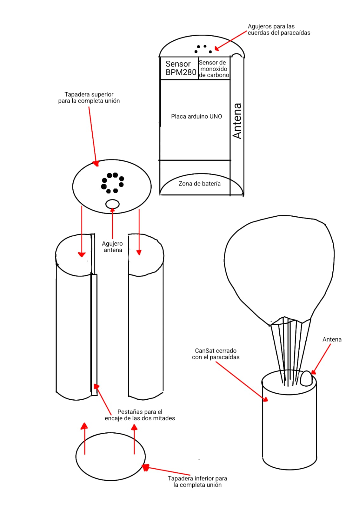

Fuimos introducidos a este proyecto el primer día de este curso. Mucho del temario dado fue estructurado pensando en el proyecto CanSat: Cálculos con sistemas eléctricos, prácticas de modelaje, teoría y práctica de programación, y experimentación con el material a ser utilizado son algunos
ejemplos de temario y prácticas realizadas con este objetivo.
El CanSat
Misiones
Nuestra misión principal con el CanSat es diseñar un sistema capaz de retransmitir datos de manera resiliente a errores y fallos de conexión. Por tanto, esta misión es compatible con la misión principal del CanSat dado que, en principio, somos agnosticos en cuanto a que datos sean recogidos. No
obstante, si tenemos ciertas ideas de que datos son propios para monitorizar, a saber: temperatura y presión (misión primaria CanSat) y concentración de algún gas de efecto invernadero (misión secundaria).
El diseño
Carcasa
Para diseñar nuestro CanSat hemos hecho varios bocetos y pruebas buscando la mayor facilidad de desmontaje y la mejor forma de distribución de los componentes, así hemos concluido que un cilindro dividido a la mitad y seccionado por tres bandejas, donde encajar los diferentes componentes con los que trabajamos, como la Arduino uno o los diferentes sensores de temperatura y presión, consiguiendo la mejor sujeción para los componentes y la mayor facilidad de montaje. Ya que este diseño esta impreso en 3D, la complejidad del diseño, si se es inteligente, no es un problema.
A la hora de realizar las prácticas del paracaídas concluimos con que la base superior debería tener 8 huecos para que las cuerdas no se enredarán y quedará un resultado más limpio y fácil de preparar, y darle un grosor de aproximadamente unos 7 milímetros a la base inferior para que el impacto lo aguante sin ninguna dificultad.
Queda bien reflejada la idea del diseño en el croquis:

Paracaídas
El primer concepto del paracaidas fue construido siguiendo los cálculos hechos en clase. Vemos la calidad del resultado en las pruebas:
Vemos que el paracaídas fue capaz de realentizar el CanSat a la velocidad esperada de ~8 m/s (ya que el edificio del que fue lanzado es de ~15m de altura). De este experimento concluimos hacer un agujero per cuerda a la tapa del CanSat.
La programación
Inicialmente, estabamos pensando hacer la programación en un lenguaje con tipos dependientes (Agda, Coq, Idris...), ya que en estos lenguajes se puede interpretar sus tipos como proposiciones. Para nuestro proyecto esto significaría ser capaces de verificar formalmente todo el código que escribimos. No obstante, por restriciones de tiempo (aunque todavía sigue en pie esta posibilidad), nos decantamos por Arduino.
Nuestro sistema de transmisión de datos se puede resumir en un protocolo que combina Selective Repeat ARQ, Foward Error Correction, además de ser un protocolo de "ventana deslizante" (Ergo, si se le quisiera dar un nombre, sería ISRP-FEC, "Index-Synchronized Selective Repeat Protocol with Forward Error Correction").
El protocolo es el siguiente:
Tenemos dos agentes, que llamaremos "satélite" y "base". Excepto por los códigos de confirmación a ser introducidos, satélite es "write-only" y base "read-only". El protocolo comienza con satélite mandando un código de 16 bits (realmente lo importante de este número es que sea capaz de representar todos los índices que se puedan tener al almacenamiento del satélite)
indicando el número de datos procesados (en nuestro caso, captados por los sensores). Base entonces responde con el número de datos leídos. Finalmente, satélite mandará, códificados en algún sistema de correción de errores (en nuestro caso, Hamming), los datos no leídos por la base.
Nótese como este sistema es altamente resiliente a la falta de conexión, ya que no hace falta ni siquiera (por un tiempo aceptable de tiempo) que el código sea recibido, que los datos sean leídos, o que los datos sean retransmitidos para que el protocolo funcione.
Este protocolo, además, nos permite funcionar de manera asíncrona, lo que nos permite transmitir datos de manera segura a una frecuencia mucho más alta que 1 segundo. Sin embargo, sufríriamos problemas cuando quisieramos representar estos datos en una gráfica dado que entonces la secuencia
de datos entonces no representa ningun intervalo de tiempo regular. Para arreglar esto, se puede adjuntar el tiempo elapsado a la estructura a ser mandada por el protocolo, y el único inconveniente de esto sería menor almacenamiento en el satélite. El código para este protocolo esta disponible
en el GitHub de esta misma página.